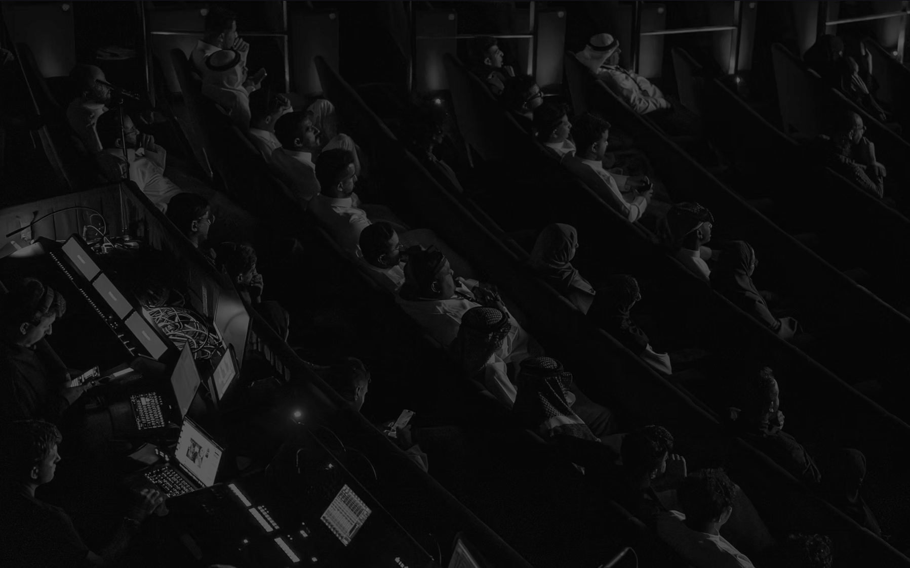

الشروط والأحكام
التعريفات
- الخدمة | المنصّة: منصّة (Scene One) الإلكترونية المعنيّة بتقييم النصوص السينمائية وربط الكتّاب بفرص التطوير والإنتاج.
- المستخدم / الكاتب: أي شخص يقوم بإنشاء حساب أو تقديم نصّ عبر المنصّة.
- القارئ الناقد: المختصّ الذي تعتمده الخدمة لقراءة النصوص وتقييمها.
- التقرير: الوثيقة الكتابية التي يصدرها القارئ الناقد بعد قراءة النص.
- النص: أي عمل سينمائي مكتوب يُقدَّم للخدمة (سيناريو فيلم قصير أو روائي طويل).
- الشريك الإنتاجي: جهة إنتاجية متعاقدة مع (Scene One) لاستلام النصوص المرشَّحة.
شروط الاستخدام
- باستخدامك لمنصّة (Scene One) أو تقديم نصّك عبرها، فإنك تُقرّ بأنك قرأت هذه الشروط وفهمتها ووافقت عليها بالكامل. إذا كنت لا توافق على أيّ بند من بنودها، يُرجى عدم استخدام الخدمة.
- يجب أن يكون عمر المستخدم ثمانية عشر عاماً فأكثر، أو أن يحصل على موافقة وليّه القانوني قبل استخدام الخدمة.
- تحتفظ (Scene One) بحقّ تعديل هذه الشروط في أيّ وقت، وستُبلّغ التعديلات عبر البريد الإلكتروني أو عبر إشعار داخل المنصّة قبل سريانها بمدّة معقولة.
- بإرسالك أي محتوى أو سيناريو عبر منصة (Scene One)، فإنك تقرّ بالتزامك بجميع الأنظمة واللوائح المعمول بها في المملكة العربية السعودية، بما في ذلك نظام الإعلام المرئي والمسموع، وتتحمّل كامل المسؤولية عن توافق المحتوى المقدم مع هذه الأنظمة. للاطلاع على النظام انقر هنا
تعريف الخدمة
تقدّم (Scene One) خدمة قراءة احترافية ونقدية للنصوص السينمائية، تشمل:
- قراءة كاملة للنصّ من قِبَل قارئ ناقد مؤهَّل.
- إصدار تقرير تقييم تفصيلي يشمل الفكرة والحبكة والشخصيات والحوار والإيقاع والإمكانية الإنتاجية.
- تصنيف صريح للنصّ ضمن إحدى الفئات الثلاث: موصى به، يستحق النظر، أو لا يُوصى به حاليًا.
- ترشيح النصوص الحاصلة على توصية قوية إلى الشركاء الإنتاجيين، بعد موافقة الكاتب الصريحة.
الخدمة لا تشمل: إعادة كتابة النصّ، أو تطويره، أو تحريره، أو ضمان قبوله من قبل أيّ جهة إنتاجية. Scene One تقدّم قراءة نقدية احترافية فقط.
الملكية الفكرية
بند جوهري: الكاتب هو المالك الكامل والوحيد لجميع حقوق الملكية الفكرية للنصّ الذي يقدّمه. لا تدّعي Scene One أيّ ملكية على النصّ في أيّ مرحلة من مراحل الخدمة. عند تقديم النصّ، يمنح الكاتب Scene One ترخيصاً محدوداً وغير حصري، يقتصر استخدامه على:
- قراءة النصّ وتقييمه من قبل القارئ الناقد المعتمَد.
- تخزينه بصورة آمنة على خوادم الخدمة طوال مدّة الاشتراك أو حتى يطلب الكاتب حذفه.
- مشاركة النصّ مع الشركاء الإنتاجيين فقط بعد موافقة الكاتب الكتابية الصريحة، وذلك في حال حصوله على توصية ودخوله مرحلة الترشيح.
لا يحقّ لمقدم الخدمة استخدام النصّ لأيّ غرض آخر، ولا نشره، ولا توزيعه، ولا اقتباس أيّ جزء منه دون إذن صريح ومسبق من الكاتب.
يُنصح الكاتب بشدّة بتسجيل نصّه لدى الهيئة السعودية للملكية الفكرية (SAIP) قبل تقديمه لأيّ جهة كانت.
سرية النصوص والمواد المقدمة
تُدرك Scene One أن النصوص المقدمة عبر المنصة قد تتضمن أعمالًا أصلية وأفكارًا إبداعية تتمتع بالحماية بموجب أنظمة الملكية الفكرية المعمول بها. وعليه، تلتزم المنصة باتخاذ الإجراءات المعقولة للحفاظ على سرية النصوص وعدم إتاحتها إلا للأشخاص المخولين بالاطلاع عليها لغرض تقديم الخدمة.
كما يلتزم جميع القرّاء النقاد والمتعاونين المعتمدين من قبل Scene One بالحفاظ على سرية النصوص والمواد المقدمة، وعدم نسخها أو تداولها أو نشرها أو الإفصاح عنها أو إتاحتها لأي طرف ثالث خارج نطاق التقييم أو تقديم الخدمة.
وفي حال قيام أي قارئ ناقد أو متعاون بالإفصاح عن النص أو تسريبه أو استغلاله أو استخدامه أو مشاركته بأي صورة غير مصرح بها، فإنه يتحمل المسؤولية القانونية الكاملة تجاه صاحب النص عن أي أضرار أو مطالبات أو حقوق قد تنشأ نتيجة لذلك، دون الإخلال بحق Scene One في اتخاذ الإجراءات المناسبة، بما في ذلك إنهاء التعاون معه أو منعه من استخدام المنصة مستقبلاً.
ولا يُفسر تمكين القارئ الناقد أو المتعاون من الاطلاع على النص على أنه نقل أو تنازل أو ترخيص بأي حق من حقوق الملكية الفكرية المتعلقة به، والتي تبقى مملوكة بالكامل لصاحب النص.
استخدام أدوات الذكاء الاصطناعي
يلتزم القارئ الناقد بعدم إدخال النصوص أو أي جزء منها في أي أداة أو خدمة تعتمد على الذكاء الاصطناعي أو معالجة المحتوى الآلية، سواء لأغراض التقييم أو التلخيص أو التحليل أو إعادة الصياغة أو لأي غرض آخر، ما لم يحصل على موافقة كتابية مسبقة من Scene One.
ويهدف هذا الالتزام إلى حماية سرية النصوص والحقوق الفكرية الخاصة بأصحابها، وضمان أن تستند التقييمات المقدمة من خلال المنصة إلى القراءة والتحليل المهني المباشر للقارئ الناقد.
ويُعد أي استخدام غير مصرح به لأدوات الذكاء الاصطناعي فيما يتعلق بالنصوص المقدمة عبر المنصة مخالفة جوهرية لهذه الشروط، ويمنح Scene One الحق في إنهاء التعاون مع القارئ الناقد واتخاذ الإجراءات المناسبة وفق الأنظمة المعمول بها.
الرسوم والدفع
تعمل (Scene One) وفق النموذج التالي:
- تُحدَّد رسوم القراءة بحسب نوع النصّ (قصير / روائي) وتُعلَن بوضوح على المنصّة قبل تقديم النصّ.
- تُدفع الرسوم عبر وسائل الدفع المعتمَدة في المملكة العربية السعودية، وتُصدر فواتير نظامية لكلّ عملية.
- سياسة الاسترداد: يحقّ للكاتب طلب استرجاع كامل رسوم الخدمة قبل إسناد النصّ إلى أحد القرّاء. ولا يمكن استرداد الرسوم بعد إسناد النصّ وبدء العمل عليه. وإذا تعذّر تنفيذ الخدمة لأسباب تخصّ المنصّة، فيتمّ ردّ المبلغ كاملاً خلال أربعة عشر يوم عمل.
مدة التسليم
تلتزم (Scene One) بتسليم التقرير خلال المدّة الزمنية المُعلَنة عند التقديم، وتتراوح عادةً بين أسبوع إلى ثلاثة أسابيع بحسب نوع النصّ وحجمه.
في حال تأخّر التسليم لأيّ سبب، يُبلَّغ الكاتب فوراً عبر البريد الإلكتروني مع توضيح الأسباب والمدّة المتوقّعة الجديدة.
التزامات الكاتب
عند استخدام (Scene One)، يلتزم الكاتب بما يلي:
- أن يكون النصّ المُقدَّم من تأليفه الأصلي، وأن يكون مالكاً لجميع حقوقه.
- أن لا يحتوي النصّ على أيّ محتوى مخالف للأنظمة السعودية، أو محرّض على الكراهية، أو يخالف الذوق العام، أو ينتهك حقوق الغير.
- أن يقدّم معلومات صحيحة عن نفسه عند إنشاء الحساب.
- أن لا يحاول التحايل على الخدمة أو إساءة استخدامها بأيّ صورة.
تتحمّل (Scene One) مسؤولية القراءة المهنية فقط، ولا تتحمّل أيّ مسؤولية عن مدى أصالة النصّ أو خلوّه من المخالفات. هذه مسؤولية الكاتب وحده.
التزامات مقدم الخدمة
تلتزم (Scene One) تجاه المستخدم بما يلي:
- قراءة النصّ بعناية ومهنية من قِبَل قارئ مؤهّل.
- إصدار تقرير تقييم نزيه وصادق ومفصَّل.
- حفظ سرّية النصّ التامّة، وعدم مشاركته مع أيّ طرف خارجي إلّا بإذن الكاتب الصريح.
- حماية البيانات الشخصية للمستخدم وفقاً لسياسة الخصوصية.
- الالتزام بالمدّة الزمنية المُعلَنة لتسليم التقرير.
المسؤوليات
التقرير الصادر من (Scene One) يعبّر عن الرأي المهني للقارئ الناقد فقط، ولا يعتبر ضماناً لجودة النصّ، ولا تعهّداً بقبوله من قِبَل أيّ جهة إنتاجية أو مهرجان أو مسابقة. لا تتحمّل Scene One أيّ مسؤولية عن:
- قرارات الكاتب المبنية على التقرير.
- عدم اهتمام شركات الإنتاج بالنصّ بعد ترشيحه.
- أيّ نزاعات قد تنشأ بين الكاتب والشركاء الإنتاجيين.
- أيّ ضرر غير مباشر أو فقدان أرباح ناتج عن استخدام الخدمة.
القانون المختص
تخضع هذه الشروط لأنظمة المملكة العربية السعودية وتُفسَّر وفقاً لها. تختصّ المحاكم السعودية بالنظر في أيّ نزاع قد ينشأ عن استخدام الخدمة.
نسعى دائماً لحلّ أيّ خلاف ودّياً قبل اللجوء إلى القضاء، ويُشجَّع المستخدم على التواصل معنا مباشرة عند وجود أيّ ملاحظة أو نزاع.